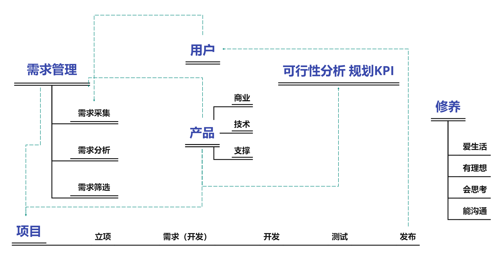
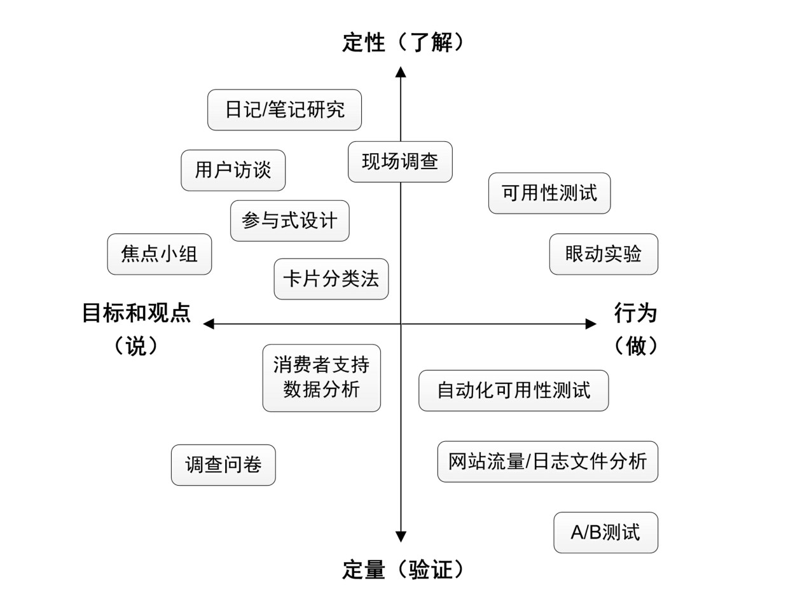
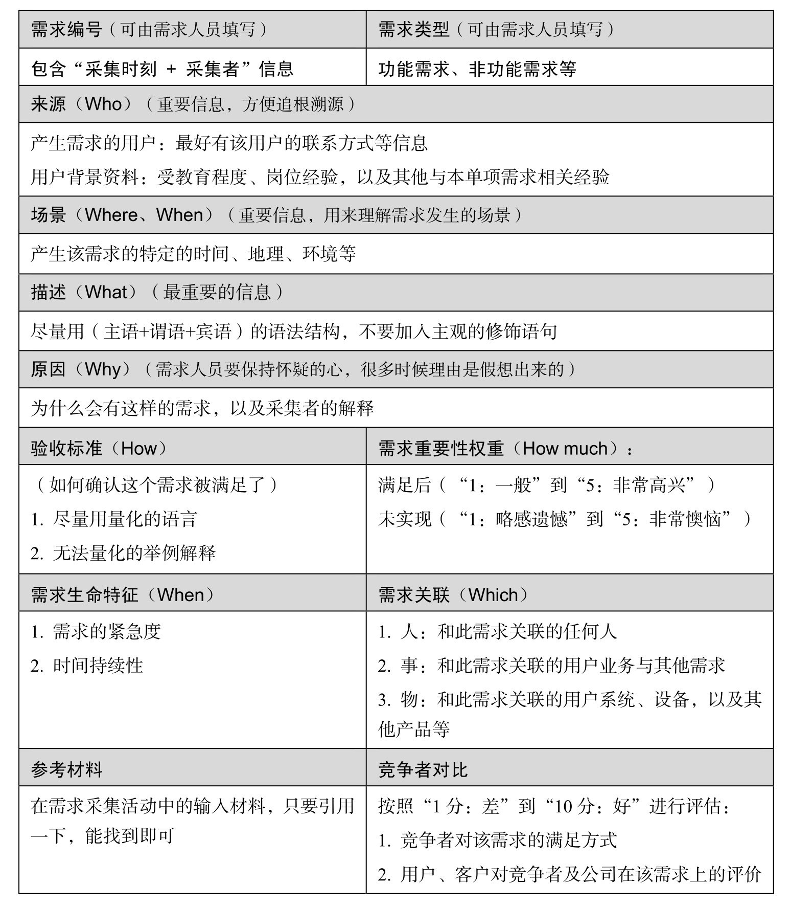
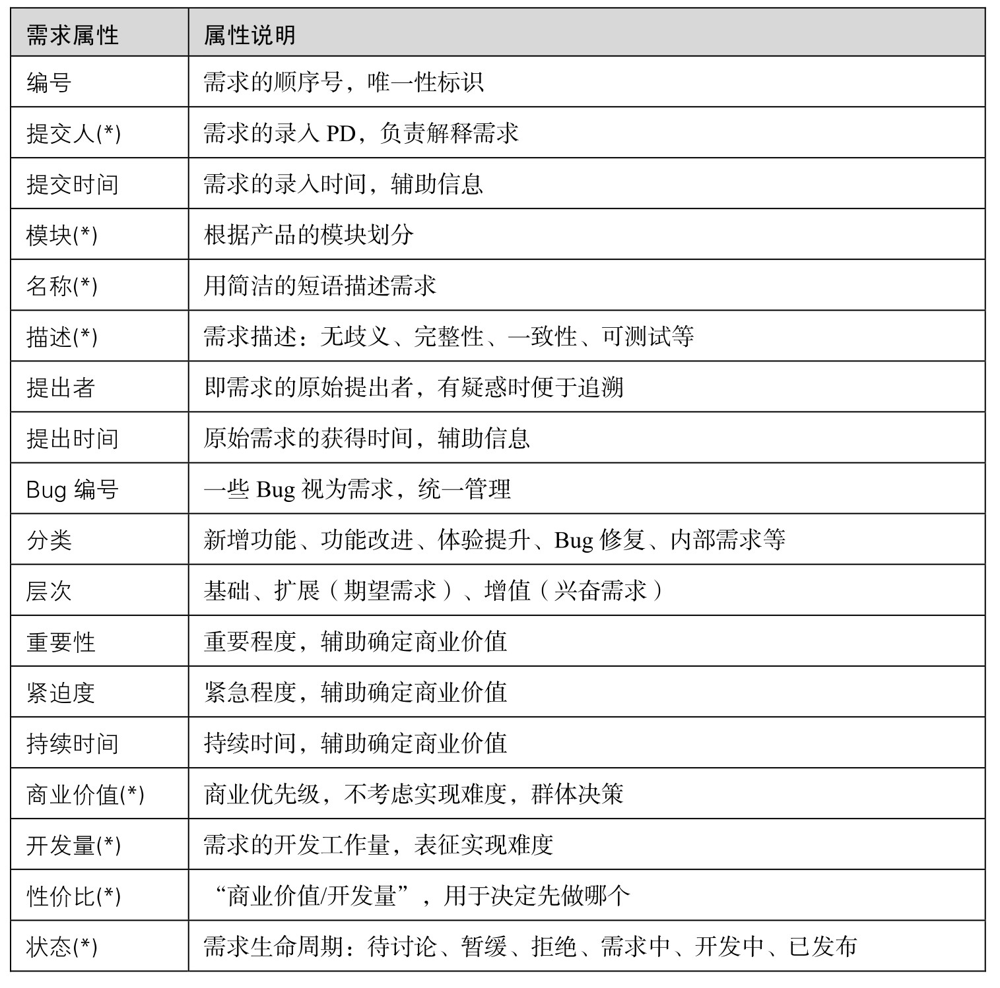
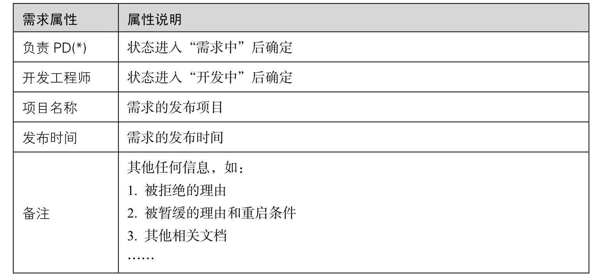

2022-2-14 今天正式开始看《人人都是产品经理》
简单读了正文前的部分，发现这本书的语言很生动有趣，读起来也很有意思，尤其是作者将本书作为一个产品来进行简单的分析，活生生就是一个例子。
By the way 写读后感的这天是情人节，今天听到了一句话，结合自己的感情经历觉得很有感触所以记在这里：
谈恋爱是认识自己，而不是取悦别人。
开篇
作者在这本书的开头说到，由于战略规划的特殊性，我们往往接触到的战略规划只是某个大战略下的细节，因此讨论战略规划不如搞清楚几个问题，这几个问题虽然简单，但是却很深刻：
用什么产品来解决什么人的什么问题？
- 要解决什么问题，满足什么需求？
- 目标用户在哪里，以什么样的话卖点打动对方？
- 能提供什么产品和服务、核心竞争力，为什么是这个产品？（竞品分析）
这本书的写作过程作者也用到了很多做产品中学到的东西（很多我可以借鉴的地方），需求分析、时间规划、项目管理、文档管理、营销推广等。
思考： 某种意义上来说，论文是否也可以是一样产品，产品的”用户”首先是审稿人，然后是广大的学者和读者们，那么用户的需求就是产品（论文）是否使用新技术、新方法或者新角度，从而给用户们（读者们）一定的启发？一句话卖点则体现在你的摘要和题目如何打动审稿人并且能够吸引读者们。你所能提供的是你的产品的卖点，它与其他的文章不同在哪里，好在哪里，创新点是什么（也有点竞品分析那味儿了哈哈）？
摘录： 我们应该养成一个习惯，当看到一个观点的时候，就有冲动去寻找与之矛盾的观点，然后通过对不同观点的分析找出背后的原因，从而更全面地理解某个事物，一个人成熟的标志之一就是心中可以容纳各种不同的思想而无碍于行事 ，与君共勉。
人人都是产品经理： 发现问题—转化为需求—形成任务—获得支持—发动伙伴—完成任务—持续跟进优化
-1到3岁的产品经理
还没开始看内容，但是我还是按照惯例，先浅显的问了自己几个问题：
- 什么是产品？
- 什么是产品经理？
- 产品经理是干啥的？
- 自己为什么想要成为产品经理？
为什么要做产品经理
好产品可以改变世界（当然，坏的也可以）
一个例子：怎样的设计可以让用户把门推开？
答：没有门把手的门！无需贴提示（贴提示反而增加了用户的思考成本，还要反应一下推拉这一个动作），用户就会按照本能将门推开。
什么是产品？
百度百科里对产品是这样解释的：
产品是一组将输入转化为输出的相互关联或相互作用的活动的结果，即“过程”的结果。
狭义概念：被生产出的产品；广义概念：可以满足人们需求的载体。
作者的理解：产品就是用来解决某个问题的东西。产品可以是有形的实物，也可以是无形的服务。
所以解决问题实际上是在解决用户的需求，这样才能产生价值。这里的价值不仅要给产品的使用者，更要给产品的创造者。
作者在这本书里谈的产品是什么，产品是同时解决用户的问题和公司的问题的实物或服务。
我个人一些浅显的想法：
问题：产品是否未必是实物或者服务，或许一个超前的概念也可以将其包装为一样产品。 它或许当下未能确切解决用户的需求，但是在可预见的未来可能可以实现用户更高级的需求（例如元宇宙概念），就像硅谷精神提到的：Fake it until you make it.。
思考： 但细想，按照 Roblox 的官方说法，元宇宙产品应具备八大要素：身份、朋友、沉浸感、低延迟、多元化、随地、经济系统、文明。当前并无一款产品能够完全称得上是元宇宙。 这意味着当今挂着元宇宙概念的产品其实只能提供元宇宙概念中某一维度的体验，所以某种程度上来说元宇宙概念不是一样产品，能够实现元宇宙的或许才能称之为一款真正的元宇宙产品。
当今产品经理的能力侧重
当今的产品经理更侧重与从无到有、从有到优的过程，涉及产品规划、数据分析、用户研究、需求分析、功能设计、项目管理、敏捷方法。
| 典型的传统行业 | 互联网、软件行业 | |
|---|---|---|
| 行业形态 | 成熟行业 | 新兴行业 |
| 产品形态和成本结构 | 实物 | 虚拟物品 |
| 生命周期 | 几年 | 几个月 |
| 盈利模式 | 单一卖产品赚钱 | 多元盈利 |
| 用户心态 | 花钱买 | 免费用 |
虽然叫经理，多少有点管理的味道，但其实每个人都应该有管理自己手头资源的能力。
管理并不是公司的管理层，如总裁、总监、经理们才需要掌握的技能，而是每个人必备的生存技能，只是每个人可以掌控的资源不同，所以需要管理的对象也不同。— 德鲁克
这里的资源在产品经理的工作中表现为以下形式：
- 信息不足以决策。
- 时间不足以安排周密的计划。
- 人员不足以支持工作的强度和难度。
- 资金不足以自由调配。
凡是资源，总归不足 —— 这是生活常态。
怎样成为一名产品经理
目标思维：
- 确立目标。
- 明确现状与目标的差距。
- 寻找变化的切入点。
我需要提升的：大量尝试、注册各种各样的产品，去用，去玩，去想。
尝试着站在不同的角度使用产品：
- 用户角度：怎么使用这个产品才能给我产生更大的效用
- 产品经理角度：绕过表象，从背后看问题的本质，思考怎么设计这个产品才能更好地平衡用户目标与商业目标。
面试官想看到的特质：有没有激情、是否够机灵、好学、逻辑思维是否清晰、沟通表达是否顺畅。
- 谈谈生活中常用的一个产品，它解决了什么问题，要是你来改进，打算怎么做？
- 看电视/书/电影 吗，举个例子分析一下它的目标用户。
全书结构图：

需求奋斗史
用户和需求是产品的源头。
看小标题这应该主要讲的是需求，惯例带问题看书：
- 什么是需求？
- 需求与产品的有什么联系？
- 需求从哪里来？
- 为什么人会有需求？
从需求被发现到决定实现，这就是一个需求的奋斗史。
做任何产品都是端到端的过程，端即用户，即“用户是需求之源”，所以必须要有“以用户为中心的思想”，体会真正的用户。
需求采集的常见方法：
- 数据分析
- 调查问卷
- 用户访谈
需求分析：
- 要听用户的但不要照着做，同时明确我们存在的价值是将用户需求转换为产品需求。
- 确定需求的基本属性、分析需求的商业价值、初评需求的实现难度、计算出需求的性价比。
- 对于 PM 来说，更重要的是发现一个问题，然后设法将其转化为一个任务来解决。
人为什么有需求
“食色性也”，“食”是为了生存保证个体延续，“色”是为了繁衍，保证种族延续，这是生物（人）的本性，也是最基本的需求。
马斯洛需求层次理论：
- 生理需求
- 安全需求
- 社交需求
- 尊重需求
- 自我实现需求
所以为什么人会有各种各样的需求？因为生活中存在的问题太多了，从而产生各种不满意和不满足，而问题就是“理想与现实的差距”，自然而然人们就会想要“减少甚至消除这个差距”，这便是需求。
研究需求可以增强对用户的理解，而理解用户，是 PM 最重要的素质之一。
小结： 需求的本质是“问题”，问题的本质是“理想与现实的差距”。
Part Two End
用户和客户
用户：User 是使用产品的人
客户：Customer 是购买产品的人，为产品付钱的人
通常将所有与产品有关的人统称为用户或者产品干系人，除了终端用户、各类客户、所在公司与该产品有关的老板、销售人员、服务人员、技术人员等。但不同的用户有重要程度之分，必须也只能有所偏重。
优先满足产品使用者的需求而不是付钱者的需求。广义用户是需求之源。
以用户为中心的思想
UCD（User Centered Design）
BCD（Boss Centered Design）
不要试图满足所有用户的需求 ，试图满足所有用户的需求会令产品变成臃肿不堪，谁都不满意的四不像。（所以需求优先级排序至关重要，优先级高的先实现，后续不断更新产品以更好更优的方式实现优先级较低的需求）
优先满足哪些用户的需求要和产品的商业目标结合考虑 ，例如：腾讯 CEO 马化腾说应该关注核心用户的需求，但有些产品起步时应该先满足大量的一般用户的需求，这里的矛盾点在于：腾讯的产品已经充分占据市场，用户数不太可能再有爆发式增长，因此只能考虑从已有用户身上挖掘价值，而最有价值的用户是产品的核心用户。而刚起步的产品用户数少，首先需要满足一般用户的需求，让用户数爆炸增长。产品所处的阶段不同，目标自然就会有区别。
体会真正的用户
想要了解用户不能光凭空想，必须真刀真枪地去研究他们
许多需求都是伪需求，有些表面的需求也需要深挖其根源需求，自己想出来的需求是最危险的，因为那是你自以为的需求，并不能代表大多数人。
试着描述用户：
试着描述自己在用各种互联网应用的时候是个什么样的用户。
- Email: 最开始使用的是 QQ 邮箱，主要是得益于 QQ 当时有着最大的用户群体，学生时代初期会用来发一些生日祝福贺卡啥的，还有一部分原因是以前的游戏需要邮箱来进行验证，因此也注册了网易邮箱。但中期有了微信之后邮箱的使用就仅限于用来收取验证码了。大四时邮箱使用率上升是因为考研失利需要调剂以及上岸之后与老师的文件往来，需要收发很多的邮件，后来我发现邮箱比起微信有一定的优势：首先是邮件的附件保存时间更长（微信常常会因为没有及时点开文件而导致文件过期），其次是邮件在形式上比微信更严谨。因为邮件收发通常不具有实时性的特点，所以一般邮件内容都是高度提炼的重点，并且其搜索功能也让邮箱整理变得不那么重要节省了很多的时间。
通过创建人物角色，时刻提醒自己正确的用户形象。 在上述内容之上加入用户个人信息、以及图片，写上你的或公司的目标与用户的目标，就是著名的Persona（用户画像）
- Persona 意为用户画像，在收集不同用户群体相关数据的基础上所建立的一系列用户模型。对于具有相似行为特征或者相似目标的用户来说，这些模型可以看成他们的原型。
- 与 Profile（用户档案）的区别：profile 描述的是用户个体（即单个用户），persona 描述的是一群用户，是基于抽象出来的群体特征建立的画像。
- 要想创建 Persona，用户行为和用户目标是要抓住的两大核心特点，通常根据可能的行为和目标划分不同用户群体。
用户研究不是产品设计过程中的附属内容，而是前提，不是为了做什么而去做用户研究，而是做了用户研究你才知道自己想要什么。
推荐书籍：《赢在用户：WEB 人物角色创建和应用实践指南》— 其中提到的用户研究方法二维图

横向，用户的说和做：
怎么说表现了目标和观点，怎么做反映了行为（用户怎么说和怎么做经常是不一致的）。虽说“耳听为虚，眼见为实”，但有时只了解用户怎么做是无法知道背后原因的，不知道问题背后的原因就不知道怎么从根本上解决问题。
纵向，定性和定量：
定性研究可以找出原因，偏向于了解；定量研究则可以发现现象，偏向于证实。只定量容易“以标代本”，看到问题却不知道原因；只定性则容易“以偏概全”，容易被特殊样本带入歧途。人们认识实物的过程是定性到定量再定性定量的螺旋上升过程。
需求采集
实际工作中，到底采用什么样的用户研究方法，往往取决于资源（如人员数量和能力、时间、经费）
基本步骤：
- 明确目标
- 训责采集方法
- 制定采集计划
- 执行采集
- 资料整理
- 需求分析
用户研究方法的简化版：

定性地说：用户访谈
用户访谈的注意点：
- 避免一组固定的问题，固定的问题会让被访者产生被审问的感觉，我们应该准备被好问题清单，但清单只起引导作用。
- 关注目标，任务其次：用户行为背后的原因更值得深入，多问问用户为什么这么做。
- 避免让用户成为设计师：听用户说，但不要照着做，用户的解决方案通常短浅、片面。
- 避免讨论技术：不要与用户纠缠产品的实现。
- 鼓励讲故事：故事是最好的辅助设计师理解用户想法的方法。
- 避免诱导性的问题：典型如”假设有 xx 功能，你会去使用吗？“，一般来说用户会给出毫无意义的肯定回答。
定量地说：调查问卷
调查问卷和用户访谈的提纲是有区别的，用户访谈的提纲通常是开放式问题，适用于我们心里还比较疑惑的时候去寻找产品的方向；调查问卷通常封闭式问题较多，适合大用户量的信息收集。
调查问卷的注意点，不管线上还是线下最好不要超过10分钟（其实我觉得5分钟以内最好），开篇放一些不需要思考的问题；中间放你想要知道的内容，需要思考的较敏感的；涉及被访者个人信息的题目放在问卷的最后，以免应答者在回答这些问题时有顾忌。
一个问卷例子：
- 问卷目的：收集本博客的读者反馈，总结得失，希望以后能做得更好。
- 样本对象：博客读者，以及对产品经理感兴趣的人。
- 调查渠道：网络，以及个人博客发布。
- 时间规划：收集三个月后给出分析报告。
- 问卷内容：不断优化。
定性地做：可用性测试
可用性测试是指通过让实际用户使用产品或原型方法来发现界面设计中的可用性问题，通常只让几个用户测试，看他们怎么做，属于典型的定性研究。
UGC（User Generated Contet）理念，UGC主要过程：
- 招募测试用户，这些用户要尽可能代表将来真实的用户。
- 准备测试任务，测试的组织者在测试前需要准备被好一系列要求用户完成的任务（这些任务应当是一系列要求用户完成的任务）。
- 测试过程，可用性测试的基本过程是用户通过使用产品来完成要求的任务，同时组织者在一旁观察用户操作的全过程，把问题记录下来；结束后，询问用户对于产品整体的主观看法或感觉。
- 研究分析，分析记录并产出一份产品的可用性问题。
定量地做：数据分析
对数据保持中立的态度，尽量不要“为了迎合一个观点而去找数据”，减少利益牵扯。
在产品设计的时候吧数据分析的需求加进去，避免出现想要做数据分析时手头没有却没有数据的窘况。
单项需求卡片
一手需求：更多发生于新产品诞生时，这时候外部没有用户、内部没有运营等，所以需要主动采集需求。
二手需求：产品运行了一段时间，产品相关人员增加，与用户有直接接触的干系人反馈的多种需求。

用户需求 VS 产品需求
用户需求：用户自以为的需求，并且经常表达为用户的解决方案。
产品需求：经过我们的分析，找到的真实需求，并且表达为产品的解决方案。
需求分析：从用户提出的需求出发，找到用户内心真正的渴望，在转化为产品需求的过程。
BRD 怎么写：
- 项目背景：为什么做这个项目？解决什么问题？数据辅助。
- 商业价值：做了这个项目以后有什么价值，预测相关数字的变化。
- 功能需求描述：通过做哪些事来达到目标，把打包好的需求描述一下，最好画出业务逻辑关系。
- 非功能需求描述：如果有，提重要的。
- 资源评估：计算成本。
- 风险与对策：项目潜在风险，给出对策。
少做就是多做，用100%的质量去实现75%的数量，而不是反过来
需求管理：
- 需求状态：“待讨论”、“拒绝”、“暂缓”、“需求中”、“开发中”、“已完成”。
- 负责PD：在需求状态变为“需求中”时指定，最有可能时此需求的提交人，要在需求的整个生命周期中保持跟进。
- 开发工程师：需求状态变为“开发中”时制定，负责该需求的技术实现，以及将来可能的故障解决。
- 项目名称：用于筛选某个项目的需求。
- 发布时间：用于查看某段时间发布的需求。
- 备注：需求被拒绝的理由、需求被暂缓的理由和重启条件。


产品产出文档类型：
- BRD: Bussiness Requirements Document(商业需求文档)，这是产品生命周期中最早的文档，其内容涉及市场分析、销售策略、盈利预测，一般没有产品细节，类似创业者给投资人看商业计划。
- MRD: Market Requirements Document(市场需求文档)，产品进入实施阶段需要有细致的市场与竞争对手分析，包括可通过哪些功能来实现商业目的，功能、非功能需求分哪几块，功能的优先级等等。一般此阶段产出产品的Feature List、业务逻辑图等。
- PRD: Product Requirements Document(产品需求文档)，功能的进一步细化，文档内容主要包含整体说明、用例文档、产品Demo等，会对产品功能做具体的描述。
- FSD: Functional Specifications Document(功能详细说明)
灵魂跟上脚步
产品经理的自我修养（莫名想到演员的自我修养）
热爱生活。